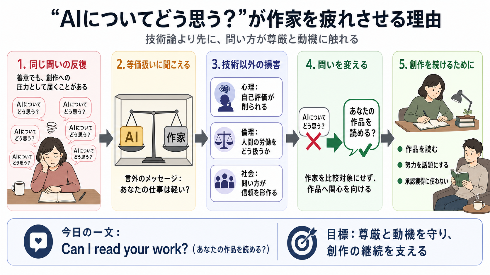

AI and the future of creative development: redefining digital ...
This research examines the relationship between artificial intelligence (AI) and its transformative impact on the creati…

作家は「AIについてどう思う？」を繰り返しぶつけられることで、善意でも創作への圧力として受け取り、意欲を削られている――という主張。
「作家に伝えると、まず返ってくるのが“AIについてどう思う？”になりがち」。会話を重ねても理解へ進まず、疲労と傷つきが蓄積する。
ここでの問題は、AIが文章を生成すること自体ではなく、問い方が作家の価値を“低く見積もる”方向に働く点にある。（生成AI / 文章生成を想定）
「AIと作家を同じ枠に置く」ように聞こえる質問は、作家の努力や人間性を等価ではないものとして扱う圧力になる。
AIの脅威は「完全な置換」より先に、作家が受け取る態度・会話の形式として現れる。技術性能ではなく“扱われ方”が創作に響く。
対話が「理解のため」ではなく、「自分のAI活用は正しい」と第三者に示す材料として使われることがある、と筆者は述べる。
筆者は、AIが長期的に芸術や執筆そのものを完全に置き換えるとは見ていない。むしろ別の形で創作は続き得る。
この主張は、技術論の外にある要因――心理・倫理・社会的相互作用――を中心に据えている。
主張は体験に強く依拠しており、質問者の意図は文脈で変わる。市場メカニズムによって選択が歪む可能性も本文には十分なデータがない。
「AIについてどう思う？」を続けるのではなく、作品への関心を示す問いに変えてほしい。筆者の提案は実務的に“別の言葉”を選ぶことだ。
解決の核は、相手を“技術の比較対象”にしないこと。作家を中心に置き、制作物へ向かう姿勢を会話で表す。
生成AI論争を「技術の優劣」だけでなく、「労働がどう見られるか」「会話が心理を壊すか」で捉え直している点が強い。
私見として、AIの議論自体を禁じる必要はないが、「作家ではなくAI中心」で話すほど関係が損なわれうる、という注意が重要だと感じた。
「AIについてどう思う？」を問い直し、作品への関心を示す言葉へ変えることが、目に見えない傷を減らす第一歩になる。
（Japanese gloss）尊厳＝dignity（尊厳）／動機＝motivation（モチベーション）／創作＝creative writing（創作）
This research examines the relationship between artificial intelligence (AI) and its transformative impact on the creati…
January 22, 2026 - Six themes emerged, namely textual quality, collaborative synergy, iterative support, cognitive engag…
# Can Good Writing Be Generative? Expert-Level AI Writing Emerges through Fine-Tuning on High-Quality Books. This assump…
# Perceptions and integration of generative artificial intelligence in creative practices and industries: a scoping revi…
This paper reviews the current state of the art in artificial intelligence (AI) technologies and applications in the con…